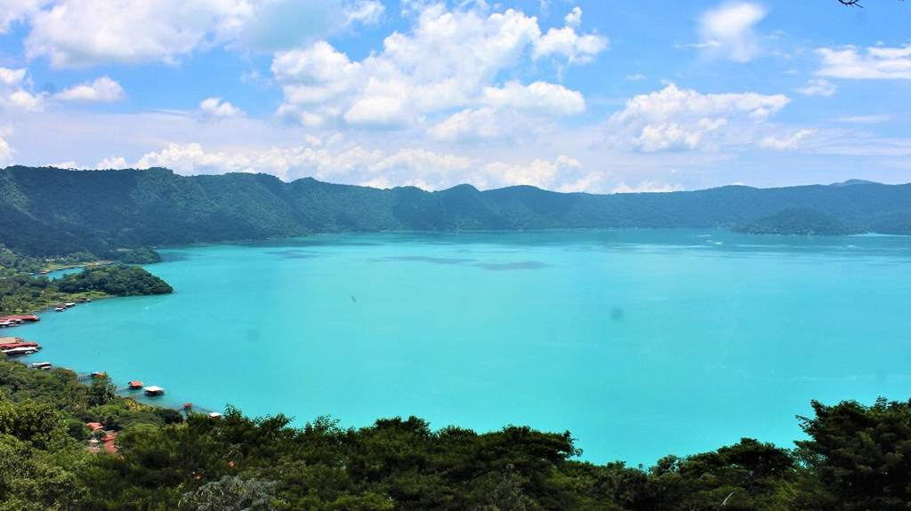
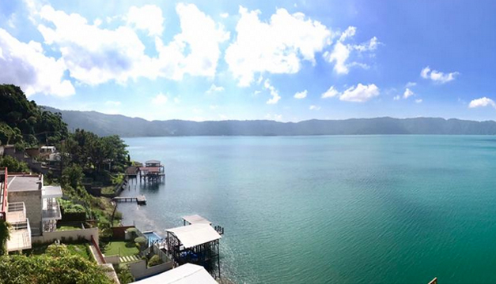
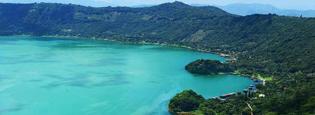

El Salvador es uno de los países que está situado encima de la placa de El Caribe, lo que lo convierte en el propietario de más de 30 lagos y lagunas cortos pero abundantes, por su geografía. Estas manifestaciones ístmicas les dan fama a nuestro país, por lo que te invitamos a que te embarques en un viaje que te llevará por sus rincones más bellos .
El lago de Coatepeque es un lago de origen volcánico, situado a 18 km al sur de la ciudad de Santa Ana en el municipio de El Congo. Considerado entre los 10 lagos más bellos del mundo ,su nombre significa en lenguaje nahuat “Cerro de Culebras”. En sus riberas hay unas formaciones rocosas llamadas los anteojos , el domo norte tiene 25 Mts de diámetro y 25 Mts de altura , el domo sur tiene 150 Mts de diámetro y 25 Mts de altura , tiene también una isla (Teopán) que era un santuario a la diosa Izqueye (compañera de Quetzalcoatl) Tiene una extensión de 25.3 Kilómetros cuadrados, y una profundidad de 115 Metros , se halla a una altitud de 745 msnm.. llago de aguas muy agradables, ideal sitio para practicar el buceo .el velerismo, kayaking, natación, ski acuático etc. para practicar el buceo contacte con los operadores de buceo siguientes
El lago de Coatepeque es lugares turístico paradisiaco que puedes visitar en El Salvador. Este lago cuenta con una gran extensión en la que se practicar varios deportes, además de su belleza cuenta con una excelente vista panorámica hacia el volcán de santa Ana y el Cerro Verde.
Dicen que una gran serpiente habitaba en los abismos del Lago Coatepeque; de enormes proporciones, con un cuerno y nada más, un ojo. Cuentan que una vez al año bufaba; y cuando esto sucedía, las aguas se estremecían y agitaban; los ribereños oían los retumbos. Pero además, no soportaban el olor del azufre que durante tres días era percibido en el lugar; olor, que los habitantes asociaban con el infierno; por lo que consideraban que la sierpe provenía de los avernos. Esto dejaba desconcertados a los habitantes de este lugar por muchos días.
